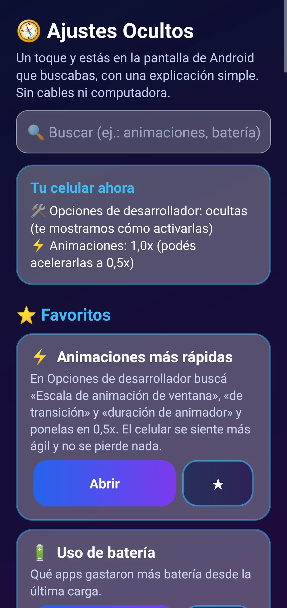
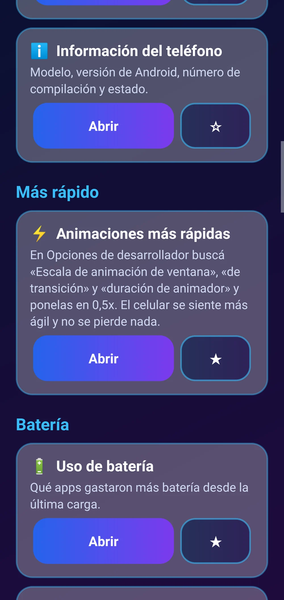
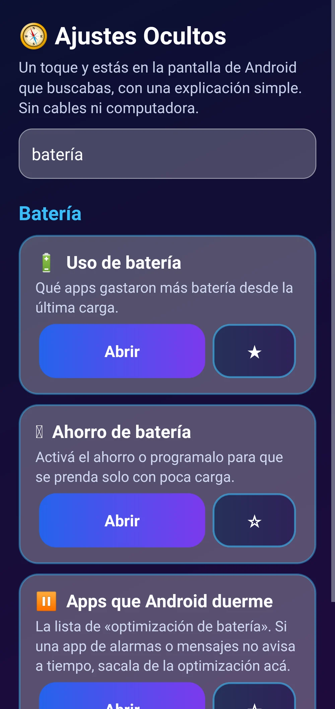
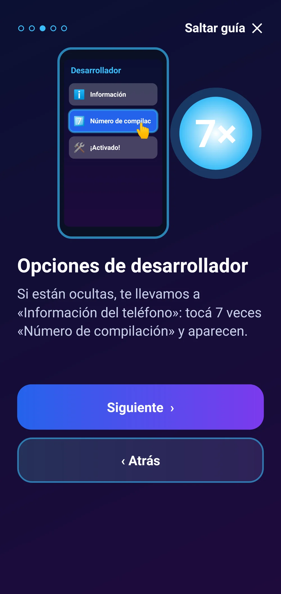
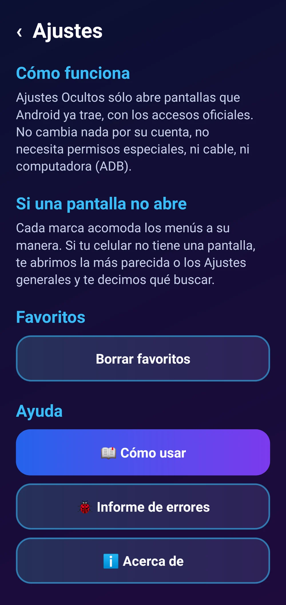

Inicio › Apps › Ajustes Ocultos Fácil
Ajustes Ocultos Fácil
Un toque y estás en la pantalla de Android que buscabas: opciones de desarrollador, animaciones, batería, apps predeterminadas y más, con una explicación simple.
Las pantallas que Android esconde, juntas y explicadas.
Cada marca acomoda los menús a su manera: algunas pantallas pueden no existir en tu celular. La app no modifica ajustes por su cuenta ni usa ADB.
Para celulares Android 9 o más nuevos.
Sin publicidad. Nunca.Pagás una vez y la app es tuya: sin banners, sin videos que te hacen esperar, sin interrupciones. Por qué cobramos
 Lo escondido de Android, a un toque
Lo escondido de Android, a un toque

Estado de tu celular y favoritos

Apps, permisos especiales y más

Buscador sin acentos

Cómo activar las opciones de desarrollador

Cómo funcionaLo que la hace distinta
- 🧭 Más de 25 pantallas escondidas en un solo lugar.
- 🗣️ Cada una explicada en castellano simple.
- 🔌 Sin cables, sin computadora y sin ADB.
- 🔒 Sin permisos especiales: sólo abre lo que tu celular ya trae.
- ⭐ Favoritos y buscador sin acentos.
Qué es
Android tiene pantallas muy útiles escondidas o enterradas en menús: opciones de desarrollador, velocidad de las animaciones, uso de batería, apps que Android duerme, apps predeterminadas, DNS privado, información de señal y más. Ajustes Ocultos Fácil las junta en un solo lugar, explica en castellano para qué sirve cada una y te lleva con un toque. Sin cables, sin computadora ni ADB y sin permisos especiales: la app sólo abre pantallas que tu celular ya trae.
Qué hace
- Junta en una lista las pantallas de Android más útiles y escondidas, agrupadas: batería, apps, avisos, internet, pantalla y sistema.
- Explica cada una en castellano simple y te lleva con un toque usando los accesos oficiales de Android.
- Si las opciones de desarrollador están ocultas, te guía para activarlas (7 toques en «Número de compilación»).
- Si tu marca no tiene una pantalla, abre la más parecida o los Ajustes y te dice qué buscar.
- No cambia nada por su cuenta: vos decidís en la pantalla de Android.
Requisitos
- Celular Android 9 o más nuevo
- Sin permisos especiales
- Sin internet (salvo para la licencia)
Funciones
- Más de 25 atajos agrupados y con buscador
- Explicación simple de cada pantalla
- Cómo activar las opciones de desarrollador
- Animaciones más rápidas (0,5x)
- Favoritos con estrella
- Sin ADB, sin cables y sin permisos especiales
Cómo se instala
- Descargá el APK e instalalo (si Android pregunta, permití instalar desde el navegador).
- Abrí la app, buscá lo que necesitás y tocá «Abrir».
- Para comprar: «Activar» → «Comprar con Mercado Pago».
Novedades
- 1.0.2 — Pulido visual: nuevo diseño SumoSoft con intro animada, selector de colores y tema (claro/oscuro/automático) que se ve bien en pantallas angostas, mejor legibilidad. Al activar la licencia desaparece todo rastro de la prueba.
- 1.0.0 — Primera versión.